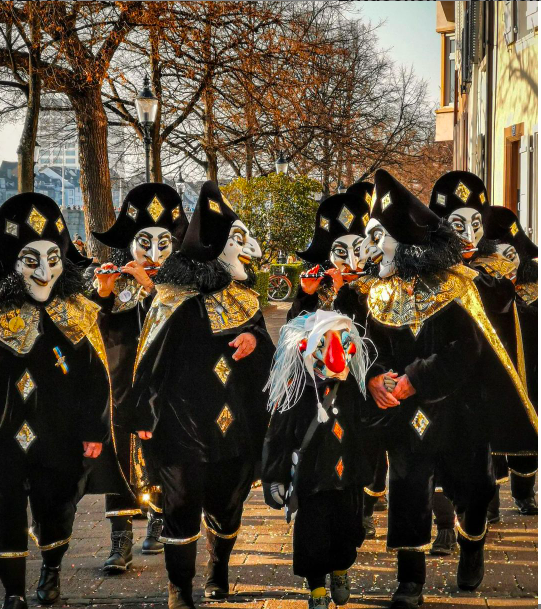

Fasnacht Figuren
Ueli
Er ist latent aufmüpfig und dank der vielen Schellen an seinem Kostüm kaum zu überhören. Der Ueli ist zweifelsohne ein Narr. Die Stoffhörner, die seine Kappe zieren, sind an Eselsohren angelehnt. Im Mittelalter stand der Esel für Trägheit und Unwissenheit.
Vorbild des Ueli ist der mittelalterliche Hofnarr. Nebst der Narrenkappe gehörten ein Spiegel und ein Trinkbecher zu dessen Markenzeichen. Ebendiese Requisiten führt Uly von Stouffen in Sebastian Brants «Das Narrenschiff» mit sich. Jener Narr aus der 1494 veröffentlichten Moralsatire könnte der Namensgeber des Basler Ueli sein. Ein weiterer naher Verwandter findet sich mit Till Eulenspiegel.
Vorbild des Ueli ist der mittelalterliche Hofnarr. Nebst der Narrenkappe gehörten ein Spiegel und ein Trinkbecher zu dessen Markenzeichen. Ebendiese Requisiten führt Uly von Stouffen in Sebastian Brants «Das Narrenschiff» mit sich. Jener Narr aus der 1494 veröffentlichten Moralsatire könnte der Namensgeber des Basler Ueli sein. Ein weiterer naher Verwandter findet sich mit Till Eulenspiegel.
Waggis
Um Worte nie verlegen gilt der Waggis als beliebteste Basler Fasnachtsfigur. Sein lautes, stürmisches und etwas grobes Auftreten ist seiner Abstammung geschuldet.
Der Waggis ist eine Karikatur eines elsässischen Bauern aus dem 19. Jahrhundert. Für die Elsässer selbst war der Waggis ein Tagelöhner oder Vagabund. Vermutlich ist der Name Waggis eine Modifikation des Begriffs Vagabund. Das klassische Kostüm mit blauer Bluse, weissem Kragen, rotem Halstuch, weisser Hose, Holzschuhen und handgestrickten Socken entspricht der damaligen Bauerntracht. Einzig die weisse Zipfelmütze wich im Lauf der Zeit einer Larve mit gigantischen Zähnen, riesiger Nase und immenser Perücke.
Der Waggis ist eine Karikatur eines elsässischen Bauern aus dem 19. Jahrhundert. Für die Elsässer selbst war der Waggis ein Tagelöhner oder Vagabund. Vermutlich ist der Name Waggis eine Modifikation des Begriffs Vagabund. Das klassische Kostüm mit blauer Bluse, weissem Kragen, rotem Halstuch, weisser Hose, Holzschuhen und handgestrickten Socken entspricht der damaligen Bauerntracht. Einzig die weisse Zipfelmütze wich im Lauf der Zeit einer Larve mit gigantischen Zähnen, riesiger Nase und immenser Perücke.
Alti Dante
Die Alti Dante verkörpert die liebevoll gemeinte Karikatur einer älteren Dame aus Basels Oberschicht. Die spitze Nase und das spitze Kinn sind oftmals ihre hervorstechenden Merkmale. Nicht selten sieht man die vornehme Dame in Chaisen (von Pferden gezogenen Kutschen). Ohne die Contenance zu verlieren, verteilt sie aus ihrer erhabenen Position grosszügig Süssigkeiten und erfreut damit Heerscharen von Kindern.
Die Alti Dante ist eine waschechte Basler Fasnachtsfigur. Sie entstand Ende des 19. Jahrhunderts und war zu Beginn des 20. Jahrhunderts sehr beliebt. Zur Popularität trug der Umstand bei, dass ihr Kostüm aus alten Kleidern geschneidert werden konnte. So war es auch für ärmere Schichten erschwinglich.
Die Alti Dante ist eine waschechte Basler Fasnachtsfigur. Sie entstand Ende des 19. Jahrhunderts und war zu Beginn des 20. Jahrhunderts sehr beliebt. Zur Popularität trug der Umstand bei, dass ihr Kostüm aus alten Kleidern geschneidert werden konnte. So war es auch für ärmere Schichten erschwinglich.
Blätzlibajass

Der Blätzlibajass besticht durch sein fröhliches Naturell. Der italienische Namensvetter des Bajass ist eine Dienerfigur in der Commedia dell’arte. Als sogenannter Zanni besitz er die Narrenfreiheit, auch heikle Themen aufs Tapet zu bringen.
Die Bezeichnung Bajass lässt sich vom französischen Paillasse und dem italienischen Pagliaccio herleiten. Die namensgebenden Blätzli wurden früher vermutlich aus alten Stoffresten hergestellt. Womöglich erst nach dem 2. Weltkrieg avancierte Filz zum bevorzugten Stoff. Weshalb lässt sich nur vermuten. Zum einen ist Filz relativ günstig und einfach zu verarbeiten. Zum anderen verfügt der Stoff über wärmende und wasserabweisende Eigenschaften.
Die Bezeichnung Bajass lässt sich vom französischen Paillasse und dem italienischen Pagliaccio herleiten. Die namensgebenden Blätzli wurden früher vermutlich aus alten Stoffresten hergestellt. Womöglich erst nach dem 2. Weltkrieg avancierte Filz zum bevorzugten Stoff. Weshalb lässt sich nur vermuten. Zum einen ist Filz relativ günstig und einfach zu verarbeiten. Zum anderen verfügt der Stoff über wärmende und wasserabweisende Eigenschaften.
Harlekin
In seiner heutigen Form ist der Harlekin eine elegante, humoristische Erscheinung mit leicht melancholischen Zügen.
Der Harlekin stammt aus Italien. Als Arlecchino ist er in der Commedia dell’arte eine der klassischen Dienerfiguren. War das Kostüm zu Beginn der Rolle entsprechend sehr schlicht, wurde es mit der Zeit bunter, feiner und kunstvoller. Diese Entwicklung, die sich hauptsächlich in Frankreich vollzog, wirkte sich auch auf den Charakter der Figur aus. Sie legte ihre ursprünglich groben Züge nach und nach ab. Nebst dem Rautenmuster, der Halskrause und dem Zweispitz sind knielange Pluderhosen, Pompons und ein Cape klassische Merkmale des Basler Harlekins.
Der Harlekin stammt aus Italien. Als Arlecchino ist er in der Commedia dell’arte eine der klassischen Dienerfiguren. War das Kostüm zu Beginn der Rolle entsprechend sehr schlicht, wurde es mit der Zeit bunter, feiner und kunstvoller. Diese Entwicklung, die sich hauptsächlich in Frankreich vollzog, wirkte sich auch auf den Charakter der Figur aus. Sie legte ihre ursprünglich groben Züge nach und nach ab. Nebst dem Rautenmuster, der Halskrause und dem Zweispitz sind knielange Pluderhosen, Pompons und ein Cape klassische Merkmale des Basler Harlekins.

Pierrot
Mit seiner verträumten, manchmal auch melancholischen Art gehört der Pierrot zu den besonders liebenswerten Figuren.
Über die Ursprünge des Pierrots herrscht Uneinigkeit. Einige Quellen vermuten in ihm den Pedrolino, einen intriganten Diener in der Commedia dell’arte. Andere wiederum verorten ihn als Pulcinella ins neapolitanische Volkstheater. Als gesichert gilt, dass die Figur im 16. Jahrhundert nach Frankreich kam. Ab 1816 prägte der französische Pantomime Jean-Gaspard Deburau den Pierrot in Paris nachhaltig. Deburau trug bereits damals das typische schwarze Käppchen. Die Basler Variante besteht in der Regel aus Filz und ist mit einer Pfauenfeder verziert.
Über die Ursprünge des Pierrots herrscht Uneinigkeit. Einige Quellen vermuten in ihm den Pedrolino, einen intriganten Diener in der Commedia dell’arte. Andere wiederum verorten ihn als Pulcinella ins neapolitanische Volkstheater. Als gesichert gilt, dass die Figur im 16. Jahrhundert nach Frankreich kam. Ab 1816 prägte der französische Pantomime Jean-Gaspard Deburau den Pierrot in Paris nachhaltig. Deburau trug bereits damals das typische schwarze Käppchen. Die Basler Variante besteht in der Regel aus Filz und ist mit einer Pfauenfeder verziert.